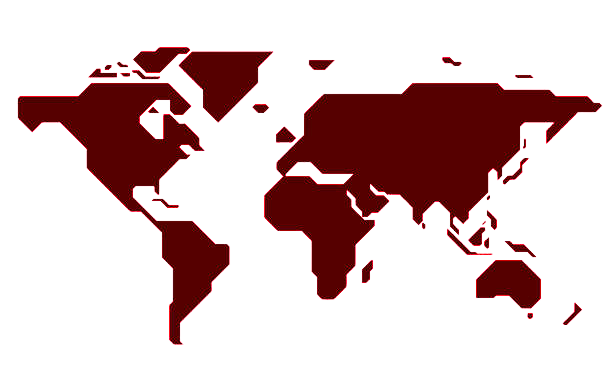
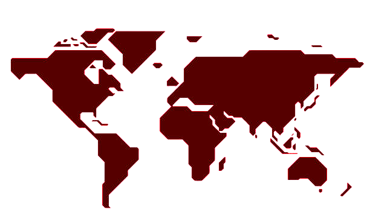
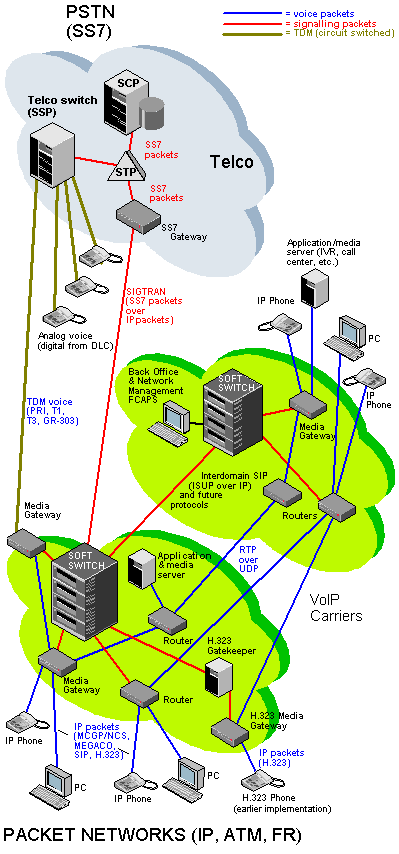

REDES CONVERGENTES
Que Son?
Las Redes Convergentes son redes de multiservicio hacen referencia a la integración
de los servicios de voz, datos y video sobre una sola red basada en IP como protocolo
de nivel de red.
Una Red Convergente todavia hay muchos puntos de contactos y muchos
dispositivos especializados, por ejemplo: PC, telefonos, TV's, PA, RPM
(Registradoras de puntos de venta minorista).
MODELO DE RED DE CONVERGENCIA
Una red de convergencia basada en IP se construye sobre tres elementos claves:
- QUE PERMITRAN OFRECER MÚLTIPLES SERVICIOS SOBRE UNA RED DE DATOS.
- UNA RED MULTIPROPÓSITO, CONSTRUIDA SOBRE UNA ARQUITECTURA DE RED FUNCIONALMENTE DISTRIBUIDA Y BASADA EN IP.
- UN SISTEMA ABIERTO DE PROTOCOLOS ESTÁNDARES MADURO E INTERNACIONALMENTE ACEPTADO.
 

ARQUITECTURA DE REDES VOIP COMO EJEMPLO DE CONVERGENCIA BASADA EN IP
Los media Gateways son los elementos críticos para la interconexión de redes.Pues hacen la traduccion entre redes que manejan diferentes estándares. convirtiendo los flujos de distintos medios como voz o video y manejan la transferencia de informacion. Entre las diferentes redes, Algunas de las características que podrían ofrecer son:
- MÚLTIPLES TIPOS DE TERMINACION DE RED
- CODIFICADORES DE VOZ
- CANCELADORES DE ECO
- DETECTORES Y GENERADORES DE TONOS DTMF